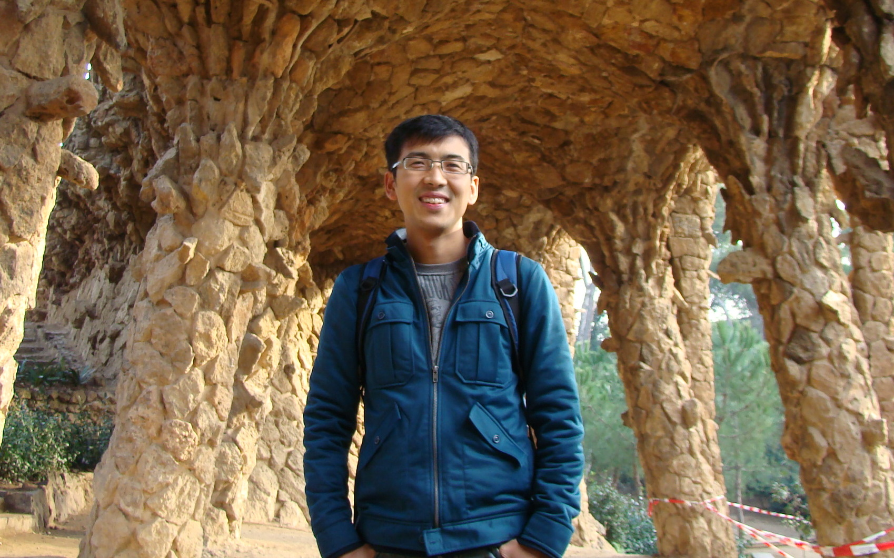

|  |
吕志鹏 （Zhipeng Lü） (English Version) 教授，博导 计算科学理论与应用研究所 常务副所长 华中科技大学 计算机科学与技术学院 电话: +86-27-8754-3885 |
|
个人简介 |
|
吕志鹏，教授，博士生导师，2007年于华中科技大学计算机软件与理论专业获博士学位，师从黄文奇教授。2008年获湖北省优秀博士学位论文。 2007年9月至2011年2在法国昂热大学计算机实验室（LERIA）从事博士后研究工作，合作导师为法国国家特级教授Jin-Kao Hao博士。自2008年起同美国工程院院士、冯诺依曼理论奖获得者、美国科罗拉多大学特级教授Fred Glover博士进行合作研究。 以第一参赛人的身份分别于2008年和2010年获第二届国际时刻表竞赛银奖（第二名）和第一届国际护士排班竞赛铜奖(第三名)。2011年获德国Dresden工业大学“Händel博士奖”，2011年获第十届“运筹新人奖”，2011年入选“香江学者计划”，2012年入选教育部“新世纪优秀人才支持计划”，2013年入选华中科技大学“华中学者”(晨星岗)。2012年入围Google ROADEF/EURO云计算负载均衡国际挑战赛决赛，在初赛中排名全球第9，亚洲第1，在决赛中排名全球第15名，2013年入围MISTA多项目调度挑战赛初赛第五名。自2011年起担任中国运筹学会智能计算分会常任理事、中国运筹学会不确定系统分会常任理事。自2011年起分别担任德国德雷斯顿工业大学、加拿大西蒙弗雷泽大学、 加拿大蒙特利尔工程师学校、加拿大蒙特利尔大学、法国昂热大学 、香港理工大学等大学的访问教授。自2007年起担任包括IEEE TEC、EJOR、 C&OR、ANOR、Physica A、CAIE、APJOR等在内的多个国际SCI期刊的评审专家。当前在Google Scholar中的H因子为11。 |
|
研究兴趣 |
| 绿色计算、计算智能、人工智能应用、系统建模与优化、智能决策、启发式优化 、拟物拟人算法等： |
通信优化：光网络规划、流量工程优化、波长分配、频率分配 、无线传感器网络规划等
航空优化: 机场资源综合调度、飞机起飞降落、机群保障优化、航班延误智能恢复、航空大数据分析等
互联网优化：云计算负载均衡调度、资源调度与分配 、大数据分析等
其它：时刻表调度、人员排班调度 、交通路由等
|
科研项目 |
・ 光网络规划流量疏导优化，自然科学基金面上项目，项目负责人，2014-2017
・ 全周期************优化，（中船）系统工程研究院（北京），项目负责人，2013-2014
・ 基于多目标的********优化，（中船）系统工程研究院（北京），项目负责人，2013-2014
・ 求解大规模约束满足问题的混合进化算法研究，自然科学基金青年基金项目，项目负责人，2012-2014
・ 4G手机无线网络媒体业务传输优化调度算法研究，华为技术有限公司 中央研究院（深圳），项目负责人，2012-2013
・ HKQ流程优化研究， （中船）系统工程研究院（北京），项目负责人，2012-2013
・ 传送网规划Grooming算法研究， 华为技术有限公司 中央研究院（深圳），项目负责人，2011-2012
・ 华中科技大学校自主创新基金前沿探索类项目，项目负责人，2011-2012
・ 教育部博士点基金（新教师类）项目，项目负责人，2012-2014
・ 运筹学中的网络优化研究，法国卢瓦尔大区科研基金项目（PDL2009-12），主要参与者，2009-2011
・ 优化算法中的学习机制研究，法国卢瓦尔大区科研基金项目（PDL2008-35），主要参与者，2009-2011
・ 特聘首席科学家项目，法国卢瓦尔大区科研基金项目，主要参与者，2009-2010
・ EGIDE博士后专项科研基金，法国政府国家奖学金项目，主要参与者，2007-2010
・ 数学机械化及其在信息技术中的应用，国家973重点基础研究发展规划项目子项目（2004CB318000），主要参与者，2004-2007
・ 矩形packing基本问题的高性能求解算法，国家自然科学基金资助项目（10471051），主要参与者，2005-2007
|
获奖情况 |
・ 教育部“新世纪优秀人才支持计划”入选者，2012年12月
・ Google ROADEF/EURO国际挑战赛，初赛排名全球9/82，决赛全球第15名，2012年8月
・ “香江学者计划”入选者，2011年7月
・ Dresden工业大学Händel博士奖，德国 德雷斯顿，2011年10月
・ 第十届运筹新人奖，中国运筹学会（ORSC）， 2011年7月
・ 2010年国际护士排班竞赛(INRC-2010)第一分组铜奖（第三名），北爱尔兰 Belfast，2010年8月
・ 2010年国际护士排班竞赛(INRC-2010)第二分组第四名， 北爱尔兰 Belfast，2010年8月
・ 2007年第二届国际时刻表竞赛(ITC-2007)第三分组银奖（第二名）， 加拿大 蒙特利尔，2008年8月
・ 湖北省优秀博士毕业论文， 湖北 武汉，2008年12月
・ 法国政府博士后专项奖学金，法国 昂热，2007-2010
|
发表论文 |
书（章节）:
[1] Zhipeng Lü*, Fred Glover and Jin-Kao Hao. Neighborhood Combination for Unconstrained Binary Quadratic Programming Problems, In M. Caserta and S. Voss (Eds.): MIC-2009 Post-Conference Book, Chapter 4, pages 49-61, 2010. (Springer©) PDF
SCI期刊论文：
2014
[1] T.C.E. Cheng, Bo Peng and Zhipeng Lü*. A Hybrid Evolutionary Algorithm to Solve the Job Shop Scheduling Problem. Annals of Operational Research. Doi: 10.1007/s10479-013-1332-5, 2014. (IF: 0.840, Springer©) PDF
[2] Yang Wang, Jin-Kao Hao, Fred Glover, Zhipeng Lü. A tabu search based memetic algorithm for the maximum diversity problem. Engineering Applications of Artificial Intelligence, 27, 103-114, 2014. (IF: 1.625, Elsevier©) PDF
[3] Hongyun Xu, Zhipeng Lü*, Edwin Cheng. Iterated Local Search for Single-machine Scheduling with Sequence-dependent Setup Times to Minimize Total Weighted Tardiness. Journal of Scheduling, DOI: 10.1007/s10951-013-0351-z, 2014. (IF: 1.051, Springer©) PDF
[4] Zhuo Wang, Zhipeng Lü*, Tao Ye. Local Search Algorithms for Solving Large Scale Load Balance Problem in Cloud Computing, Science China (F) (中文), 2014 PDF 王卓, 吕志鹏*，叶涛. 求解大规模云计算负载均衡问题的局部搜索算法,中国科学，已录用，2014 PDF
2013
[1] Xiangjing Lai and Zhipeng Lü*. Multistart Iterated Tabu Search for Bandwidth Coloring Problem. Computers & Operations Research. 40, 1401-1409, 2013. (IF: 1.769, Elsevier©) PDF
[3] Zhanghua Fu, Wenqi Huang and Zhipeng Lü. Iterated Tabu Search for the Circular Open Dimension Problem. European Journal of Operational Research. 225(2), 236-243, 2013. (IF: 2.158, Elsevier©) PDF
[4] Yang Wang, Zhipeng Lü, Fred Glover, Jin-Kao Hao. Probabilistic GRASP-tabu search algorithms for the UBQP problem, Computers & Operations Research. 40, 3100-3107, 2013. (IF: 1.769, Elsevier©) PDF
[5] Gary Kochenberger, Jin-Kao Hao, Zhipeng Lü, Haibo Wang, Fred Glover. Solving large scale max cut problems via Tabu Search. Journal of Heuristics,19(4), 565-571, 2013. (IF: 1.623, Springer©) PDF
[6] Yang Wang, Zhipeng Lü, Fred Glover, Jin-Kao Hao. Backbone guided Tabu Search for solving the UBQP problem. Journal of Heuristics, 19(4), 679-695, 2013. (IF: 1.623, Springer©) PDF 2012
[1] Yang Wang, Zhipeng Lü, Fred Glover, Jin-Kao Hao. Path Relinking for Unconstrained Binary Quadratic Programming. European Journal of Operational Research. 223(3), 595-604, 2012. (IF: 2.158, Elsevier©) PDF
[2] Zhipeng Lü and Jin-Kao Hao. Adaptive Neighborhood Search for Nurse Rostering, European Journal of Operational Research. 218(3): 865-876, 2012. (IF: 2.158, Elsevier©) PDF
[3] Zhipeng Lü and Jin-Kao Hao. Adaptive Memory-Based Local Search for MAX-SAT. Applied Soft Computing. 12(8), 2063-2071, 2012. (IF: 2.084, Elsevier©) PDF 2010
[1] Zhipeng Lü*, Fred Glover and Jin-Kao Hao. A Hybrid Metaheuristic Approach to Solving the UBQP Problem, European Journal of Operational Research. 207(3): 1254-1262, 2010. (IF: 2.158,Elsevier©) PDF
[2] Zhipeng Lü*and Jin-Kao Hao. A Memetic Algorithm for Graph Coloring, European Journal of Operational Research, 203 (1), 241�C250, 2010. (IF: 2.158, Elsevier©) PDF
[3] Zhipeng Lü* and Jin-Kao Hao. Adaptive Tabu Search for Course Timetabling, European Journal of Operational Research, 200(1), 235-244, 2010. (IF: 2.158,Elsevier©) PDF
[4] Fred Glover, Zhipeng Lü and Jin-Kao Hao. Diversification-Driven Tabu Search for Unconstrained Binary Quadratic Problems, A Quarterly Journal of Operations Research (4OR), 8(3): 239-253, 2010. (IF: 0.69, Springer©) PDF
[5] Zhipeng Lü*, Jin-Kao Hao and Fred Glover. Neighborhood Analysis: a Case Study on Curriculum-based Course Timetabling, Journal of Heuristics, 17(2): 97-118, 2010. (IF: 1.623, Springer©) PDF 2009及之前
[1] Zhipeng Lü* and Wenqi Huang. Iterated Tabu Search for Identifying Community Structure in Complex Networks, Physical Review E, 80,026130, 2009. (IF: 2.352, APS©) PDF
[2] Zhipeng Lü* and Wenqi Huang. PERM for Solving Circle Packing Problem. Computers & Operations Research, 35(5), 1742-1755, 2008. (IF: 1.769, Elsevier©) PDF
[3] Zhipeng Lü*, Wenqi Huang and He Shi. Quasi-physical Algorithm for Protein Folding in an Off-lattice Model. Communications in Theoretical Physics, 47(1), 181-185, 2007. (IF: 0.58) PDF
[4] Wenqi Huang, Mao Chen and Zhipeng Lü. Energy Optimization for Off-lattice Protein Folding. Physical Review E, 74, 041907, 2006. (IF: 2.352, APS©) PDF
[5] Wenqi Huang, Zhipeng Lü* and He Shi. Growth Algorithm for Finding Low Energy Configurations of Simple Lattice Proteins. Physical Review E, 72(1), 016704, 2005. (IF: 2.352, APS©) PDF
[6] Wenqi Huang and Zhipeng Lü*. Personification Algorithm for Protein Folding Problem: Improvements in PERM. Chinese Science Bulletin, 49(19), 2092-2096, 2004. (PDF, DOI) (IF: 1.087, APS©) PDF
审稿中的期刊论文:
[1] Tao Ye, Wenqi Huang, Zhipeng Lü*. Iterated Tabu Search for Packing Unequal Circles in a Circle. (revised) PDF
[2] Xiangjing Lai and Zhipeng Lü*, Jin-Kao Hao and Fred Glover. A TS/Path Relinking Algorithm for Bandwidth Coloring Problem. (under review) PDF
[3] Tao Ye, Tao Wang, Zhipeng Lü* and Jin-Kao Hao. Hybrid Evolutionary Algorithm for Linear Ordering Problem. (under review) PDF
[4] Tao Ye, Kan Zhou, Zhipeng Lü* and Jin-Kao Hao. A Memetic Algorithm for the Linear Ordering Problem With Cumulative Cost. (revised) PDF
[5] Zhipeng Lü, Zhaojing Luo and Tao Ye. Solving the Fixed-Spectrum Frequency Assignment Problem via Iterated Tabu Search. (revised) PDF
[6] Xinyun Wu, Zhipeng Lü*, Qi Guo, Tao Ye. Hierarchical Local Search for Traffic Grooming and Routing with Simple Path Constraints in WDM Mesh Networks. (under review) PDF
[7] Bo Peng, Zhipeng Lü*, Edwin Cheng. A Tabu Search/Path Relinking Algorithm to Solve the Job Shop Scheduling Problem. (under review) PDF
[8] Junwen Ding, Edwin Cheng, Liping Xu, Zhipeng Lü*. A Hybrid Metaheuristic Approach for the Single Machine Total Weighted Tardiness Problem. (under review) PDF
[9] Hongyun Xu, Zhipeng Lü*. A Study of Hybrid Evolutionary Algorithms for Single-machine Scheduling with Sequence-dependent Setup Times. (under review) PDF
[10] Zhuo Wang, Zhipeng Lü*, Tao Ye. Metaheuristic Search for Machine Reassignment in Cloud Computing. (under review) PDF
[11] Yang Wang, Jin-Kao Hao, Fred Glover, Zhipeng Lü. Solving the maximum clique and maximum vertex weight clique problems via binary quadratic programming. (under review) PDF
[12] Yang Wang, Jin-Kao Hao, Fred Glover, Zhipeng Lü. Solving the minimum sum coloring problem via binary quadratic programming. (under review) PDF
国际会议论文:
[1] Wei Xiao, Wenqing Chu, Zhipeng Lü*, Tao Ye, Guang Liu and Shanshan Cui. A Population-based Strategic Oscillation Algorithm for Linear Ordering Problem with Cumulative Costs, EvoCOP 2013, Lecture Notes in Computer Science, 7832: 49-60, 2013. (Springer©) PDF
[2] Yang Wang, Zhipeng Lü, Fred Glover and Jin-Kao Hao. A Multilevel Algorithm for Large Unconstrained Binary Quadratic Optimization, CPAIOR 2012, Lecture Notes in Computer Science, 7298: 395-408, 2012. (Springer©) PDF
[3] Yang Wang, Zhipeng Lü*, Fred Glover and Jin-Kao Hao. Effective Variable Fixing and Scoring Strategies for Binary Quadratic Programming, EvoCOP 2011, Lecture Notes in Computer Science, 6622: 72-83,2011. (Springer©) PDF
[4] Yang Wang, Zhipeng Lü* and Jin-Kao Hao. A Study of Multi-Parent Crossover Operators within the Memetic Algorithm, PPSN 2010, Lecture Notes in Computer Science, 6238: 556-565, 2010. (Springer©) PDF
[5] Zhipeng Lü*, Jin-Kao Hao and Fred Glover. A Study of Memetic Search with Multi-parent Combination for UBQP, EvoCop 2010, Lecture Notes in Computer Science. 6022: 154-165, 2010. (Springer©) PDF
[6] Zhipeng Lü* and Jin-Kao Hao. A Critical Element-Guided Perturbation Strategy for Iterated Local Search. EvoCop 2009, Lecture Notes in Computer Science, 5482: 1-12, 2009. (Springer©) PDF
[7] Zhipeng Lü* and Jin-Kao Hao. Solving the Course Timetabling Problem with a Hybrid Heuristic Algorithm. AIMSA 2008, Lecture Notes in Computer Science 5253: 262-273, 2008. (Springer©) PDF
[8] Hanhua Chen, Hai Jin, Xiaoming Ning and Zhipeng Lü. Q-SAC: Toward QoS optimized Service Automatic Composition Scheduling. IEEE International Symposium on Cluster Computing and the Grid (CCGrid), 2005. PDF
|
学术活动 |
程序委员会:
・ 13th European Conference on Evolutionary Computation in Combinatorial Optimization (EvoCOP-2014), Granada, Spain, April 23-25, 2014.
・ Special Session on Evolutionary Computation in Scheduling, IEEE CEC2012, June 10-15 Brisbane, Australia
・ 2nd International Conference on Operations Research and Enterprise Systems (ICROES-2013), 2013.
・ 11th European Conference on Evolutionary Computation in Combinatorial Optimization (EvoCOP-2012), Malaga, Spain, April 11-13, 2012.
・ 1st International Conference on Operations Research and Enterprise Systems (ICROES-2012), Vilamoura, Portugal, February 4-6, 2012.
・ 7th International Conference on Computational Intelligence and Security (CIS-2011), Sanya, China, December 3-4, 2011.
论文审稿:
・ IEEE Transactions on Evolutionary Computation
・ European Journal of Operational Research
・ Computers and Operations Research
・ Annals of Operations Research
・ Computers & Industrial Engineering
・ Asia-Pacific Journal of Operational Research
・ Physica A
|
报告讲座 |
・ 云计算负载均衡，厦门大学计算机系，厦门，2013年11月13日
・ 航空领域中的调度优化问题，中船工业系统工程研究院，北京，2013年9月22日
・ 云计算负载均衡调度的多邻域搜索算法研究，2012年中国运筹学年会分组报告，沈阳，2012年10月21日
・ Advanced Metaheuristics for University Course Timetabling，Center for Operations Research, Simon Fraser University Vancouver, BC, Canada 2012年8月6日
・ 学术报告：启发式优化算法及其应用，华中科技大学机械学院数字制造装备与技术国家重点实验室，武汉 2012年3月29日
・ 主题演讲：自适应启发式算法及其应用前景分析，ECWAC 2012国际会议，武汉 2012年3月19日
・ 主题演讲：自适应启发式算法及其应用前景分析，MSEC 2011国际会议，武汉 2011年11月27日
・ 求解大规模组合优化问题的自适应启发式算法，Dresden工业大学运筹与工业管理实验室，德国 德雷斯顿 2011年10月
・ 组合优化与工业应用，华中科技大学计算科学理论研究所，中国 武汉，2011年9月
・ 第十届运筹新人奖答辩报告，中国 南京，2011年7月29日
・ 求解NP难问题的启发式算法，华中科技大学计算机学院ACM班讲座，中国 武汉，2011年4月8日
・ A Study of Multi-Parent Crossover Operators within the Memetic Algorithm, PPSN 2010, 波兰 克拉克夫 2010年9月
・ Neighborhood Combination for Unconstrained Binary Quadratic Programming Problems, MIC 2009, 德国 汉堡 2009年7月
・ A Critical Element-Guided Perturbation Strategy for Iterated Local Search, EvoCOP 2009, 德国 图宾根(Tϋbingen) 2009年4月
・ Solving the Course Timetabling Problem with a Hybrid Heuristic Algorithm, AIMSA 2008, 保加利亚 瓦尔那(Varna) 2008年9月